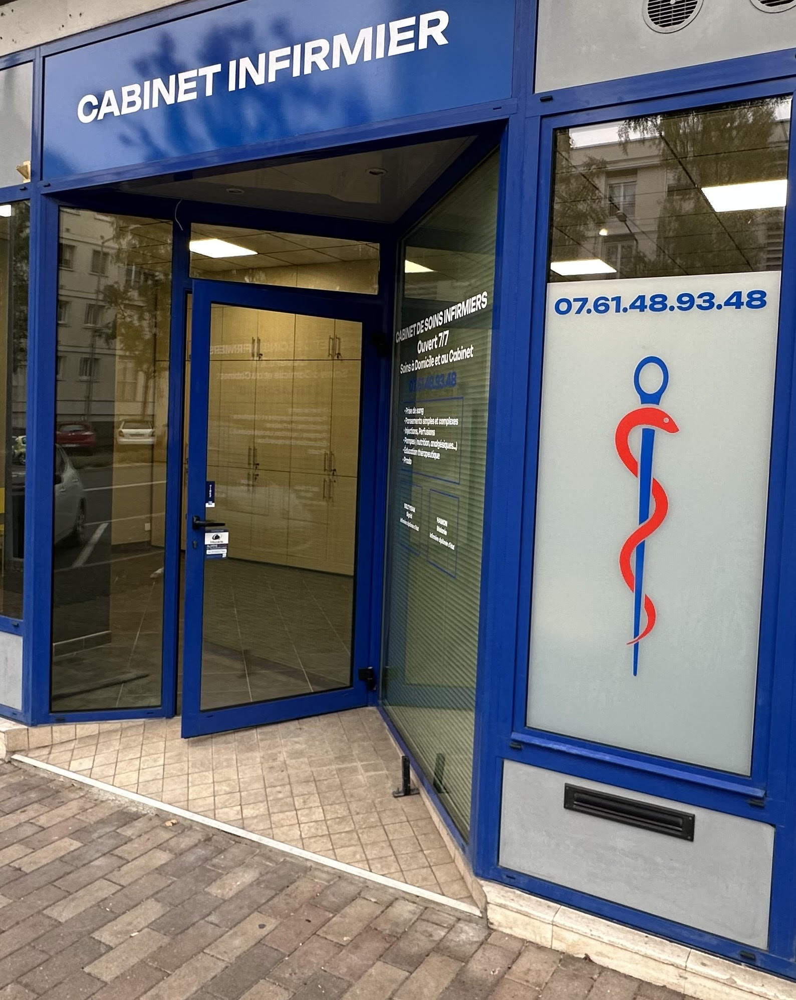

Bienvenue au Cabinet Infirmier du 113 boulevard Saint-Michel, Angers. Nous proposons des soins infirmiers à domicile et au cabinet, disponibles 7j/7 de 6h30 à 21h.
🕒 Tous les jours, de 6h30 à 21h
📍 Boulevard Saint-Michel, Grand Pigeon, Place Ney, Avenue Pasteur, et tout Angers